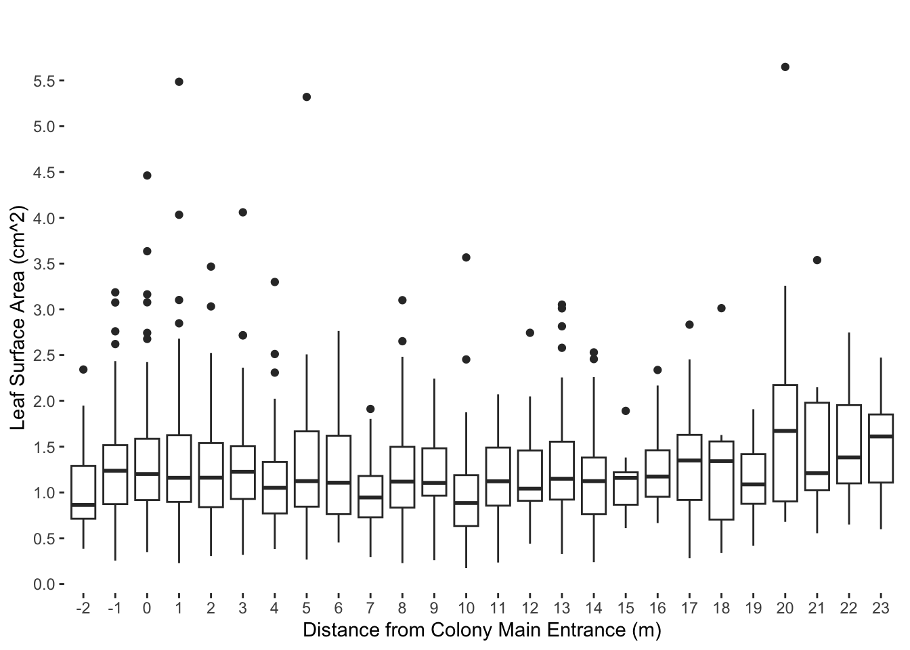
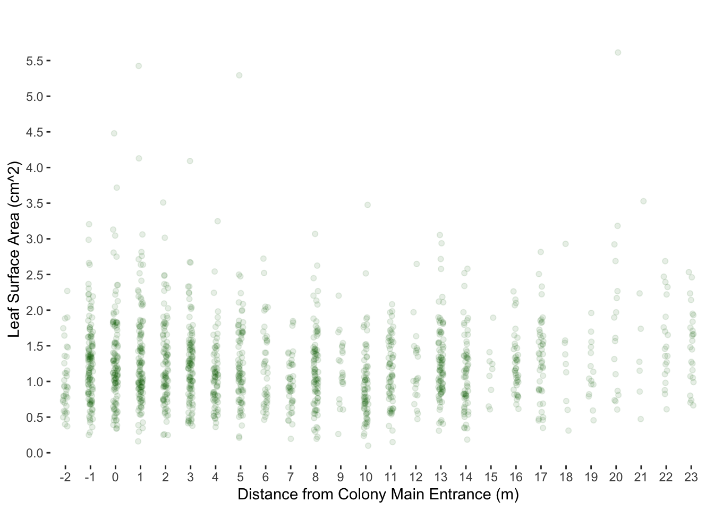
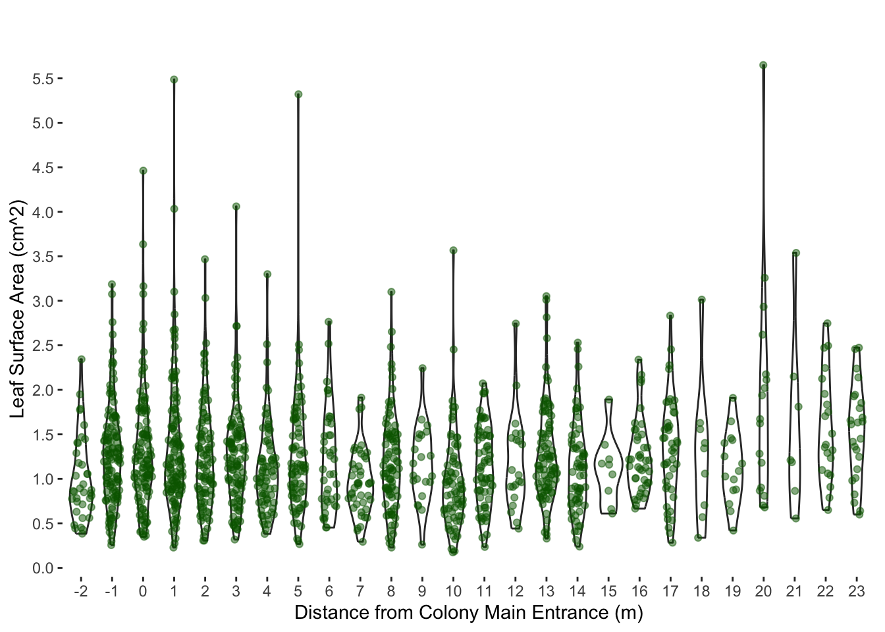
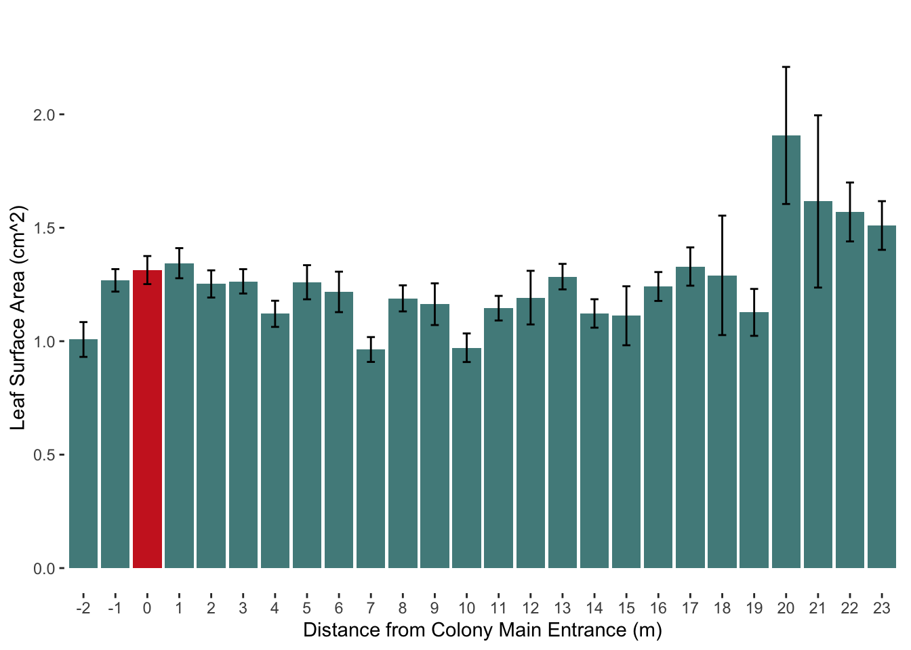

df <- read_xlsx("~/Desktop/Spring 2024/Field Ecology Lab/Leafcutters Jan 2024/Excel Sheets/No statistics.xlsx")working_space_leafcutter
Leaf Area vs. Distance Analysis
Make dataframe from excel
Tidy, remove NA, and order
df_long <- tidyr::gather(df, key = "Distance", value = "Area")
df_long$Distance <- as.character(df_long$Distance)
df_long_nona <- df_long[complete.cases(df_long$Area), ]
df_long_nona$Distance <- as.character(df_long_nona$Distance)
df_long_nona$Distance <- factor(df_long_nona$Distance, levels = unique(df_long_nona$Distance))
has_identical_rows <- any(duplicated(df_long_nona) | duplicated(df_long_nona, fromLast = TRUE))
if (has_identical_rows) {
cat("The data frame has identical rows.\n")
} else {
cat("The data frame does not have identical rows.\n")
}The data frame has identical rows.identical_rows <- df_long_nona[duplicated(df_long_nona) | duplicated(df_long_nona, fromLast = TRUE), ]
print(identical_rows, n = Inf)# A tibble: 79 × 2
Distance Area
<fct> <dbl>
1 -1 1.26
2 -1 1.15
3 -1 1.26
4 -1 1.42
5 -1 1.42
6 -1 1.15
7 0 1.05
8 0 1.24
9 0 1.24
10 0 1.41
11 0 1.05
12 0 1.41
13 1 1.96
14 1 0.994
15 1 0.381
16 1 1.13
17 1 1.96
18 1 1.08
19 1 0.994
20 1 1.08
21 1 1.13
22 1 0.381
23 1 0.87
24 1 0.87
25 2 1.37
26 2 0.946
27 2 1.37
28 2 1.37
29 2 1.37
30 2 0.946
31 2 0.759
32 2 1.35
33 2 1.35
34 2 0.759
35 3 1.50
36 3 0.921
37 3 1.50
38 3 0.921
39 3 1.33
40 3 1.33
41 6 0.569
42 6 0.569
43 7 1.02
44 7 1.02
45 8 0.844
46 8 0.844
47 8 0.998
48 8 1.08
49 8 0.743
50 8 1.08
51 8 0.743
52 8 0.998
53 10 1.60
54 10 1.40
55 10 1.01
56 10 1.20
57 10 1.44
58 10 1.20
59 10 1.01
60 10 1.40
61 10 1.60
62 10 0.874
63 10 0.995
64 10 0.995
65 10 0.874
66 10 1.44
67 11 0.948
68 11 0.948
69 13 0.882
70 13 1.72
71 13 1.72
72 13 0.882
73 14 0.988
74 14 0.988
75 14 0.988
76 14 0.863
77 14 0.863
78 16 1.02
79 16 1.02 unique_df <- df_long_nona[!duplicated(df_long_nona) & !duplicated(df_long_nona, fromLast = TRUE), ]Make a box-and-whisker plot
ggplot(unique_df, aes(x = Distance, y = Area)) +
geom_boxplot() +
labs(title = "",
x = "Distance from Colony Main Entrance (m)",
y = "Leaf Surface Area (cm^2)") +
theme(panel.background = element_rect(fill = "white"),
panel.grid = element_line(color = "white"),
panel.grid.major.x = element_line(color = "white"))+
scale_y_continuous(breaks = seq(0, max(unique_df$Area), by = 0.5))
Make a scatter plot with jitter
ggplot(unique_df, aes(x = Distance, y = Area)) +
geom_point(position = position_jitter(width = 0.1, height = 0.1), color = "darkgreen", alpha = 0.1) +
labs(title = "",
x = "Distance from Colony Main Entrance (m)",
y = "Leaf Surface Area (cm^2)") +
theme(panel.background = element_rect(fill = "white"),
panel.grid = element_line(color = "white"),
panel.grid.major.x = element_line(color = "white")) +
scale_y_continuous(breaks = seq(0, max(unique_df$Area), by = 0.5))
Add violin plot
ggplot(unique_df, aes(x = Area, y = Distance)) +
geom_violin() +
geom_sina(color = "darkgreen", alpha = 0.5) + # Use geom_sina for adjusted jitter
labs(title = "",
x = "Leaf Surface Area (cm^2)",
y = "Distance from Colony Main Entrance (m)") +
theme(panel.background = element_rect(fill = "white"),
panel.grid = element_line(color = "white"),
panel.grid.major.y = element_line(color = "white")) +
scale_x_continuous(breaks = seq(0, max(unique_df$Area), by = 0.5)) +
coord_flip()
Make a bar chart
# Calculate means and standard errors using dplyr
summary_data <- unique_df %>%
group_by(Distance) %>%
summarize(Mean = mean(Area, na.rm = TRUE),
SE = sd(Area, na.rm = TRUE) / sqrt(sum(!is.na(Area))))
ggplot(summary_data, aes(x = Distance, y = Mean, fill = factor(Distance))) +
geom_bar(stat = "identity", position = "dodge", fill = ifelse(summary_data$Distance == "0", "firebrick3", "darkslategray4")) +
geom_errorbar(aes(ymin = Mean - SE, ymax = Mean + SE), position = position_dodge(width = 0.8), width = 0.25) +
labs(title = "",
x = "Distance from Colony Main Entrance (m)",
y = "Leaf Surface Area (cm^2)") +
theme(legend.position = "none",
panel.background = element_rect(fill = "white"),
panel.grid = element_line(color = "white"),
panel.grid.major.x = element_line(color = "white"))
Leaf area statistics
One-way ANOVA
model <- aov(Area ~ Distance, data = unique_df)
summary(model) Df Sum Sq Mean Sq F value Pr(>F)
Distance 25 29.4 1.1765 3.434 2.6e-08 ***
Residuals 1448 496.1 0.3426
---
Signif. codes: 0 '***' 0.001 '**' 0.01 '*' 0.05 '.' 0.1 ' ' 1Tukey Test
tukey_results <- HSD.test(model, "Distance")
print(tukey_results)$statistics
MSerror Df Mean CV
0.3425792 1448 1.234516 47.41152
$parameters
test name.t ntr StudentizedRange alpha
Tukey Distance 26 5.211254 0.05
$means
Area std r se Min Max Q25 Q50 Q75
-1 1.2681984 0.5564138 126 0.05214290 0.256 3.186 0.87225 1.2370 1.51650
-2 1.0075946 0.4666685 37 0.09622316 0.384 2.343 0.71300 0.8630 1.28900
0 1.3135593 0.6720263 118 0.05388148 0.349 4.462 0.91700 1.2015 1.58575
1 1.3438862 0.7358918 123 0.05277496 0.228 5.486 0.89650 1.1600 1.62550
10 0.9712432 0.5424032 74 0.06804005 0.174 3.567 0.63375 0.8845 1.18925
11 1.1455672 0.4439430 67 0.07150610 0.235 2.072 0.85600 1.1220 1.49000
12 1.1920952 0.5417438 21 0.12772351 0.441 2.744 0.90900 1.0420 1.45900
13 1.2846374 0.5362017 91 0.06135639 0.329 3.052 0.92200 1.1500 1.55450
14 1.1223077 0.5051656 65 0.07259786 0.239 2.530 0.76200 1.1240 1.38100
15 1.1121111 0.3901543 9 0.19510088 0.610 1.891 0.86600 1.1590 1.22000
16 1.2411667 0.4125550 42 0.09031416 0.666 2.338 0.95400 1.1740 1.46100
17 1.3291778 0.5662934 45 0.08725177 0.283 2.833 0.91800 1.3490 1.62900
18 1.2903333 0.7899096 9 0.19510088 0.338 3.013 0.70400 1.3420 1.55700
19 1.1270667 0.4003059 15 0.15112449 0.419 1.909 0.87600 1.0880 1.41900
2 1.2524227 0.5902635 97 0.05942848 0.306 3.467 0.84000 1.1610 1.53900
20 1.9068824 1.2455106 17 0.14195674 0.679 5.648 0.90200 1.6720 2.17400
21 1.6161429 1.0046484 7 0.22122360 0.555 3.538 1.02550 1.2100 1.97950
22 1.5696190 0.5950433 21 0.12772351 0.650 2.747 1.09900 1.3830 1.95400
23 1.5100400 0.5362901 25 0.11706053 0.599 2.473 1.10800 1.6120 1.85200
3 1.2638545 0.5628942 110 0.05580642 0.318 4.060 0.92950 1.2260 1.50650
4 1.1206974 0.5026705 76 0.06713882 0.381 3.299 0.77125 1.0505 1.33225
5 1.2599390 0.6813044 82 0.06463586 0.267 5.320 0.84500 1.1240 1.66900
6 1.2173415 0.5713538 41 0.09140891 0.453 2.764 0.76300 1.1070 1.62000
7 0.9634318 0.3632986 44 0.08823769 0.293 1.912 0.72900 0.9455 1.18000
8 1.1888000 0.5454106 90 0.06169632 0.228 3.100 0.83425 1.1180 1.49825
9 1.1631364 0.4310594 22 0.12478694 0.261 2.243 0.96475 1.1050 1.48250
$comparison
NULL
$groups
Area groups
20 1.9068824 a
21 1.6161429 ab
22 1.5696190 ab
23 1.5100400 ab
1 1.3438862 b
17 1.3291778 b
0 1.3135593 b
18 1.2903333 b
13 1.2846374 b
-1 1.2681984 b
3 1.2638545 b
5 1.2599390 b
2 1.2524227 b
16 1.2411667 b
6 1.2173415 b
12 1.1920952 b
8 1.1888000 b
9 1.1631364 b
11 1.1455672 b
19 1.1270667 b
14 1.1223077 b
4 1.1206974 b
15 1.1121111 b
-2 1.0075946 b
10 0.9712432 b
7 0.9634318 b
attr(,"class")
[1] "group"Removal of outliers
# Load necessary libraries
library(dplyr)
# Specify the columns for which you want to check outliers
columns_to_check <- c("Area", "Distance")
# Function to remove outliers based on box-and-whisker plot
remove_outliers <- function(x) {
bp <- boxplot(x, plot = FALSE)
outliers <- bp$out
return(outliers)
}
# Identify and store outliers
outliers_list <- unique_df %>%
group_by(Distance) %>%
summarise(across(all_of("Area"), remove_outliers)) %>%
unnest(cols = c(Area))Warning: Returning more (or less) than 1 row per `summarise()` group was deprecated in
dplyr 1.1.0.
ℹ Please use `reframe()` instead.
ℹ When switching from `summarise()` to `reframe()`, remember that `reframe()`
always returns an ungrouped data frame and adjust accordingly.`summarise()` has grouped output by 'Distance'. You can override using the
`.groups` argument.# Create df_no_outliers by removing outliers for each column
df_no_outliers <- unique_df %>%
anti_join(outliers_list, by = c("Distance" = "Distance", "Area" = "Area"))Leaf Mass and Count Analysis
Create a Dataframe
# Extract the means from the summary_data dataframe
area_vector <- summary_data$Mean
distance_vector <- summary_data$Distance
#Extract mass and count from excel
mass_count_excel_file_path <- "~/Desktop/Spring 2024/Field Ecology Lab/Leafcutters Jan 2024/Excel Sheets/Area Data.xlsx"# Assuming unique_df is your dataframe
distance_counts <- table(unique_df$Distance)
# Print the counts
print(distance_counts)
-2 -1 0 1 2 3 4 5 6 7 8 9 10 11 12 13 14 15 16 17
37 126 118 123 97 110 76 82 41 44 90 22 74 67 21 91 65 9 42 45
18 19 20 21 22 23
9 15 17 7 21 25